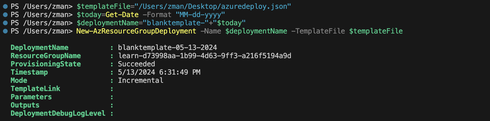

AZURE + AWS / CASE STUDY
Migration, automation & operations
Evaluate pre-migration tools and programmatic deployment approaches, then document the operational practices that support a cloud migration.
Context: BallotOnline academic case study and learning environment.
Pre-Migration Assessment Tool Comparison
Evaluated and compared leading cloud migration assessment tools, including AWS Application Discovery Service, NetApp OnCommand Insight, Azure Migrate, to determine the best fit for BallotOnline's migration strategy
Process:
• Provided detailed descriptions of each tool’s features and capabilities
• Created a comparative analysis focusing on usability, integration, data collection, and reporting
• Assessed each tool’s user-friendliness and deployment ease
• Concluded with recommendations based on the analysis
Key Takeaways
Gained insights into various pre-migration tools and developed the ability to critically evaluate them for strategic decision-making
Cloud Deployment Programmatic Approach
Explored and compared programmatic approaches including Azure Resource Manager (ARM) Templates, AWS CloudFormation, for cloud deployment to facilitate efficient, repeatable infrastructure provisioning
Process:
• Discussed the importance of automation in cloud deployments and the role of IaC
• Detailed each tool's features, supported platforms, and scripting languages
• Conducted a comparative analysis on ease of use, flexibility, and integration
• Offered recommendations based on organizational needs and team expertise
Key Takeaways
Enhanced my understanding of programmatic deployment approaches and developed the ability to select appropriate automation tools

Cloud Advanced Features Runbook
Created a comprehensive runbook detailing the implementation of advanced cloud features such as auditing and logging, cloud orchestration, service catalog, cloud metering and billing to enhance BallotOnline's infrastructure
Process:
• Provided an executive summary on the importance of advanced cloud features
• Detailed implementation steps and best practices for each feature
• Outlined management and monitoring procedures to ensure ongoing effectiveness
• Included supplementary materials such as configuration scripts and troubleshooting guides
Key Takeaways
Developed proficiency in implementing and managing advanced cloud features and created detailed operational documentation